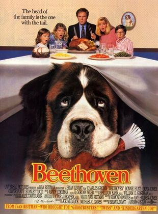

Olá! Me chamo Ana Alves Silva e sou pintora. Tenho 44 anos e nasci na cidade de Valença, interior do estado do Rio de Janeiro.
Sai de minha cidade aos 23 anos para cursar Artes Visuais na capital. Lá também iniciei minha carreira.
Há três anos vivo em Ouro Preto. Apesar de estar frequentemente viajando para grandes cidades me sinto em casa no interior. E esta região de Minas Gerais é grande fonte de inspiração para minhas pinturas.
A minha paixão pela arte vem de berço. O nome do meu pai é José Borges Silva, ele é escultor. Cresci cercada por belíssimas obras em madeira. Ele sempre foi a minha maior inspiração.
Maria Braga Alves Silva, essa é a minha mãe, ela é escritora. Apesar da sua formação como tradutora ela sempre se dedicou a criar histórias. Assim, me tornei observadora e busco contar profundas histórias com a minha arte.
Carismática, audaciosa, devoradora de livros e cozinheira nata.
Amo estar entre amigos e filosofar sobre a vida. Também sou boa ouvinte. Gosto de iniciar novos projetos (artísticos e pessoais)! Uma curiosidade é que meu marido e eu temos como hobbie a pescaria.
Orgulho e Preconceito - Jane Austen
Persuasão - Jane Austen

As Crônicas de Nárnia - C. S. Lewis
Os Lusíadas - Luís Vaz de Camões
Sempre ao Seu Lado
Beethoven - O Magnífico
À Procura da Felicidade
A arte diz o indizível; exprime o inexprimível, traduz o intraduzível.
(Leonardo da Vinci)